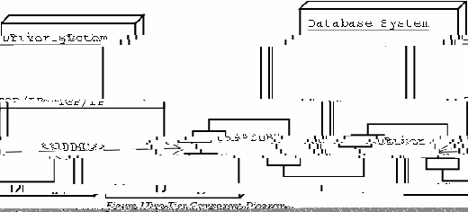

OSDL-DBT-1
A Transactional e-Commerce Database Workload
User Manual
Table of Contents
1Introduction 3
2Setup 3
2.1Getting the Files 3
2.1.1OSDL-DBT-1 3
2.1.2SAP DB 3
2.2Compiling the Test Kit 4
2.3Building the Database 4
2.3.1SAP DB 4
2.3.2Creating the Database 5
3Configuration 5
3.1ODBC 5
4Running the Test Kit 6
4.1Two-Tier Environment 7
4.2Three-Tier Environment 8
5Test Results 9
6Tools 11
6.1SAP DB 13
This document provides the user instructions on how to use this kit.
The source files for the OSDL-DBT-1 test kit and a database must be retrieved in order to use the kit. The kit currently supports only SAP DB.
The source code for the OSDL-DBT-1 kit and a database must be downloaded.
Complete instructions on how to obtain the latest source files from the CVS repository for the OSDL-DBT-1 kit can be found on SourceForge at the following Web address:
http://sourceforge.net/cvs/?group_id=52479
Or the following commands can be used to retrieve the current source files from CVS:
cvs -d:pserver:anonymous@cvs.osdldbt.sourceforge.net:/cvsroot/osdldbt login
cvs -z3 -d:pserver:anonymous@cvs.osdldbt.sourceforge.net:/cvsroot/osdldbt co dbt2
When prompted for a password, just press the enter key.
The latest stable version of the kit can also be found listed on SourceForge at the following Web address:
http://sourceforge.net/project/showfiles.php?group_id=52479
It is also recommended that a link be created to the location where the source code resides from /usr/local/src/dbt1 since some scripts and programs assume the source code is in that location.
The OSDL-DBT-1 test kit was developed using SAP DB Version 7.3.0.21. Newer version of the database should work fine with the test kit. Binary packages and installation instructions for Linux can be obtained from SAP at the following Web address:
http://www.sapdb.org/sap_db_linux.htm
Source packages and installation instructions for Linux can be obtained from SAP at the following Web address:
http://www.sapdb.org/develop/dev_linux.htm
Source files and the binary tgz packages contain the complete database package. If rpm files are desired, the following files are required:
sapdb-ind-7.3.0.21-1.i386.rpm
sapdb-srv-7.3.0.21-1.i386.rpm
sapdb-callif-7.3.0.21-1.i386.rpm
The additional rpm packages can be retrieved and used with the test kit.
The ODBC header files and libraries must also be installed on the same system with the source code in order to build the test kit. The libraries are included in the sapdb-callif-7.3.0.21-1.i386.rpm file. The libraries must also be installed the database system and the system with the appServer. The system with the driver needs the ODBC libraries only if the driver is used in a two-tier environment.
The entire test kit can be compiled by running make in the top level directory of the source code.
This following sections explains how to build the database depending on which database is used. SAP DB is currently the only database supported.
An OpenOffice.org spreadsheet is provided to aid in sizing the database:
doc/sapdb_sizing.sxc
Under the Performance tab there are two parameters that can be change. A default value of 1,000 is entered for the number of items to create and a default value of 1 is entered for the number of emulated users (EUs) expected to run against the database. The number of items can be changed to 10,000, 100,000, 1,000,000, or 10,000,000. The number of EUs can be any positive integer.
The data displayed under the Load tab report the expected size of the database for the parameters entered to be used for the physical database layout. The number to note is the total number of 8 KB pages since SAP DB uses those units in its configuration settings. Keep in mind that extra space must be taken into consideration because the database grows during a test run.
A shell script, scripts/sapdb/create_db.sh, creates the physical database. In that script, there are lines beginning with param_adddevspace that define the devices on which the database resides. These lines must be tailored fit the I/O subsystem on the system that the database is running on for the system devspace, log devspace, and user devspace. The number defining the size of the log devspaces and the data devspaces are in units of 8 KB pages. This script is executed within the db_setup_sample.sh script that is explained in the next section.
The users dbm, dba, and dbt are created, with passwords the same as the user name, by create_db.sh. The user dbm is the database administrator account, dba is the utility account, and dbt is the user account. For the sole purpose of running the test kit, only the dbt account is used to run the programs built in the test kit.
Under each database specific directory under scripts/ is a file called db_setup_sample.sh. This script has two variables defined in it, ITEMS and EUS, which refer to the number of items to generate in the database and the number of EUs expected to run. Executing the script runs the create_db.sh script, generates the database table data, creates the database tables, loads the database, creates indexes, loads the stored procedures, and backs up the database.
This section explains how to configure various parts of the system before running the test kit.
There are two ways to connect to the a database using ODBC. The first way is to use the address of the database system and the database name separated by a colon in the syntax address:database_name when the server name. For example:
192.168.0.1:DBT1
is a valid server name for the DBT1 database on the system at 192.168.0.1.
The second method uses the .odbc.ini file that must reside in the home directory of the user attempting to run the program. The format of the file is:
[alias]
ServerDB = database_name
ServerNode = address
Driver = /opt/sapdb/interfaces/odbc/lib/libsqlod.so
Description = any text
For example:
[dbt1]
ServerDB = DBT1
ServerNode = 192.168.0.1
Driver = /opt/sapdb/interfaces/odbc/lib/libsqlod.so
Description = OSDL-DBT-1
is a valid .odbc.ini file where dbt1 can be used as the server name to connect to the database.
The OSDL-DBT-1 test kit can be run in two ways. The kit is designed to be run in a two-tier and a three-tier environment. The two-tier environment involves running the driver against the database directly, as shown in Figure 1. The three-tier environment involves running the driver against a type of transaction management program on the middle-tier system that sits in front of the database, as shown in Figure 2.

The two-tier environment is not as scalable as the three-tier environment.
The test kit also provides scripts to help collect processor, disk, and memory utilization, using iostat, in the scrips/stats/ directory, cpu.sh, io.sh, and paging.sh respectively. Each script takes two command line arguments, in the following order, the sample size in seconds, and the number of samples to take. To collect ten minutes of processor utilization data over 30 second intervals:
cpu.sh 30 20
will collect 20 samples that 30 second samples.
The script, run_test_sample.sh, in the scripts/ directory is provided as a sample on how to run the test kit on a single system. The variables that should be changed are:
SRCHOME - The root directory of the source code.
EUS - The number of users to emulate.
ITEMS - The number of items in the database.
CUSTOMERS - The number of customers in the database: EUS * 2880
RAMPUP - The number of users to start per minute.
THINKTIME - The number of seconds a user spends between interactions.
DURATION - The length of a test run in seconds.
CONNECT_STR - The database connect string.
DB_USER - The user name: dbt.
DB_PASS - The user password: dbt.
DB_CONN - The number of database connections to open from the appServer program.
APP_PORT - The port where the appServer program is listening for connection requests from the driver.
Q_SIZE - The maximum number of transaction that can be queued in the appServer program.
T_SIZE - The maximum number of transactions that can be queued for an individual interaction.
SAMPLE_LENGTH - The number of seconds the processor, disk, and paging statistics should be sampled over.
NUMBER_OF_SAMPLES The number of samples to take of the processor, disk, and paging statistics.
The following sub-sections detail how to run each program individually.
The driver program for the two-tier environment is compiled as dbdriver_p1 in the dbdriver/ directory. The dbdriver_p1 program takes the following arguments in the following order:
server name - The database connect string.
user - Database user name: dbt.
pass - Database user password: dbt.
items - Number of items in the database.
customers - Number of customers in the database: eus * 2880.
eus - The number of users emulated.
eu/min - The number of users to connect per minute.
think time - The number of seconds a user spends between interactions.
duration - The length of test, in seconds, after all users connect.
The appServer program must be started before the driver in the three-tier environment. The program resides in the appServer/ directory and take the following arguments in the following order:
dbnodename - Synonymous to server name and is the address of the database.
username - The database user name: dbt.
password - The database user password: dbt.
port - The port to listen for connection requests from the driver program.
db_connection - The number of database connections to open.
transaction queue size - The maximum number of transactions that can be queued.
transaction array size - The maximum number of transactions that can be queued for an interaction.
The driver program for the three-tier environment is compiled as dbdriver_p2 in the dbdriver/ directory. The dbdriver_p2 program takes the following arguments in the following order:
server name - The address of the appServer program.
port - The port the appServer program is listening to.
items - Number of items in the database.
customers - Number of customers in the database: eus * 2880.
eus - The number of users emulated.
eu/min - The number of users to connect per minute.
think time - The number of seconds a user spends between interactions.
duration - The length of test, in seconds, after all users connect.
The driver program, in both its forms, records response time data to the file mix.log. A program, results, is provided in the tools/ directory, which takes the file name as a command line argument to analyze the file. The results program also assumes the output files from the cpu.sh, io.sh, and paging.sh are in the scripts/stats/ directory relative to the tools/ directory. The results program displays the results of these files to the screen, for example:
interaction % avg response time (s)
AC 0.04 0.000
AR 0.05 0.000
BS 5.19 0.000
BC 1.08 0.000
BR 2.50 0.000
CR 2.92 0.000
HO 17.19 0.000
NP 4.98 0.000
OD 0.63 0.000
OI 0.78 0.000
PD 16.71 0.000
SR 19.76 0.000
SU 16.55 0.000
SC 11.62 0.000
12.6 interactions per second
17.7 minute duration
CPU:
Average %user 11.43
Average %nice 0.00
Average %sys 7.26
Average %idle 81.30
I/O:
The following numbers are presented as averages for each column.
Note that stats are reported for every device attached to the system.
device rrqm/s wrqm/s r/s w/s rsec/s wsec/s avgrq-sz avgqu-sz await svctm %util
hda1 0.00 0.00 0.00 0.00 0.00 0.00 0.24 0.00
16.77 10.50 0.00
hda2 7.38 4.25 2.29 2.62 77.39 55.23 27.89 1.25
360.66 181.54 6.34
hda3 0.17 0.00 0.02 0.00 1.59 0.00 11.87 0.00
39.44 26.33 0.03
hdb 0.00 0.00 0.01 0.01 0.10 0.09 2.29 0.00
46.27 3.41 0.00
hdb1 0.00 0.00 0.01 0.01 0.10 0.09 2.29 0.00
46.27 3.41 0.00
hda 7.73 4.25 2.37 2.67 80.82 55.65 27.72 1.29
364.82 183.28 6.50
Paging:
Average pgpgin/s 43.67
Average pgpgout/s 27.91
Average activepg 29601.77
Average inadtypg 14288.26
Average inaclnpg 2696.00
Average inatarpg 2112.82
Other tools are provided in the test kit that aid in setting up the database or testing different functions of the kit. These tools are explained in this section: load_db_proc, odbc_test_p1, and odbc_test_p2. Database specific tools are listed under the appropriate sections.
The odbc_test_p1 and odbc_test_p2 programs , in the tools/ directory, are used to support isolated testing of the database stored procedures. And load_db_proc is the program to load long stored procedures that repmcli cannot load. Due to limitations in repmcli , the program fails to load a stored procedure if the size of the stored procedures is too large. The load_db_proc program is provided as a tool to load those zlong stored procedures. To execute load_db_proc , go to the tools/ directory and type:
./load_db_proc <servername> <uname> <password> <db_procedure_name>
where:
servername - The hostname or IP address of the database machine.
user - Database user name, e.g. dbt.
pass - Database user password, e.g. dbt.
db_procedure_name - The stored procedure file name.
The odbc_test_p1 program is the tool used to test each individual interaction. It connects to the database directly. To execute the program, go to directory tools and type:
./odbc_test_p1 <interaction> <servername> <uname> <password>
The <interaction> option can be one of the following:
ac - Admin Confirm
ar - Admin Request
bs - Best Sellers
bc - Buy Confirm
br - Buy Request
ho - Home
np - New Products
od - Order Display
oi - Order Inquiry
pd - Product Display
sr - Search Request
su - Search Results
sc - Shopping Cart
The <servername> is the database node name in the format of hostname:database_name. For example, localhost:DBT1.
The <uname> option is the database user name: dbt.
The <password> options is the database user password: dbt.
The odbc_test_p2 program is used to test each individual interaction and it connects to the appServer program instead of connecting directly to the database. To execute this program, go to directory tools and type:
./odbc_test_p2 <interaction> <servername> <port>
The interaction options are the same as those for the odbc_test_p1 program. The <interaction> option can be one of the following:
ac - Admin Confirm
ar - Admin Request
bs - Best Sellers
bc - Buy Confirm
br - Buy Request
ho - Home
np - New Products
od - Order Display
oi - Order Inquiry
pd - Product Display
sr - Search Request
su - Search Results
sc - Shopping Cart
The <servername> option is the hostname or IP address of the system where the appServer program is running on.
The <port> option is the port number where the appServer is listening to. It is the port number used when starting the appServer program.
The tools provided for SAP DB are a set of scripts that aid in using the database.
The backup_db.sh script backups the database.
The drop_db.sh script drops the database.
The monitor.sh script takes a snapshot of all of the counters in most of the monitor tables and outputs them into text files.
The restart.sh script shutdown down and start the database.
The trace_off.sh script shuts of the database trace and takes a command line argument for were to output the trace data. For example:
trace_off.sh /tmp/todays_trace.txt
Be sure to run trace_on.sh first, or else there will not be any trace data collected.
The trace_on.sh script turns on the database trace.
The update_stats.sh script updates the statistics table in the database to help the optimizer.